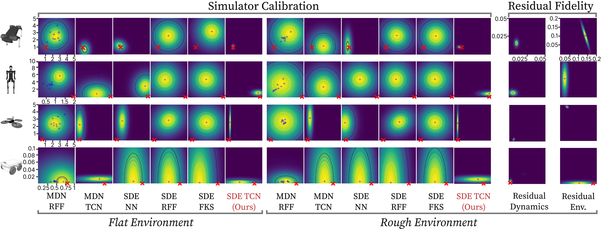

Can a robot adapt when its simulator falls short?
Problem. Tuning mass or friction cannot fix everything a simulator gets wrong. Unmodeled dynamics and errors in perceived terrain still leave a gap that limits policy adaptation.
Method. Neural Fidelity Calibration jointly infers simulator parameters and residual fidelity: the remaining dynamics and environment discrepancies. A conditional diffusion model samples plausible simulation domains from real experience, and the robot fine-tunes its policy when an anomaly is detected.
Result. On rough real-world terrain with a broken wheel axle, PPO with NFC achieves 72% success, compared with 25% without NFC and 53% with calibration alone.

-
Calibrate the physics
Use the robot’s recent trajectory to infer physical parameters, such as wheel friction and damping, with a conditional diffusion model.
-
Account for the residual
Jointly infer unmodeled motion and terrain corrections in a compact latent space, capturing uncertainty beyond simulator parameters.
-
Adapt when needed
When an anomaly is detected, fine-tune the policy in sampled simulation domains. Refine NFC sequentially as new experience arrives.
When uncertainty is high, a learned “hallucination” policy adjusts the spread of simulated domains to support policy improvement. It acts only in simulation.
Sim-to-Real Adaptation Experiments
The front left wheel axle is broken in every experiment.
Neural Fidelity Calibration Results

Parameter pairs shown in each row, from top to bottom. Select the figure to enlarge.
- Quadruped
- Rear front shank mass vs. right rear shank mass
- Humanoid
- Torso mass vs. right hip stiffness
- Quadcopter
- First rotor mass vs. third rotor arm mass
- Jackal
- Rear right wheel damping vs. front left wheel restitution